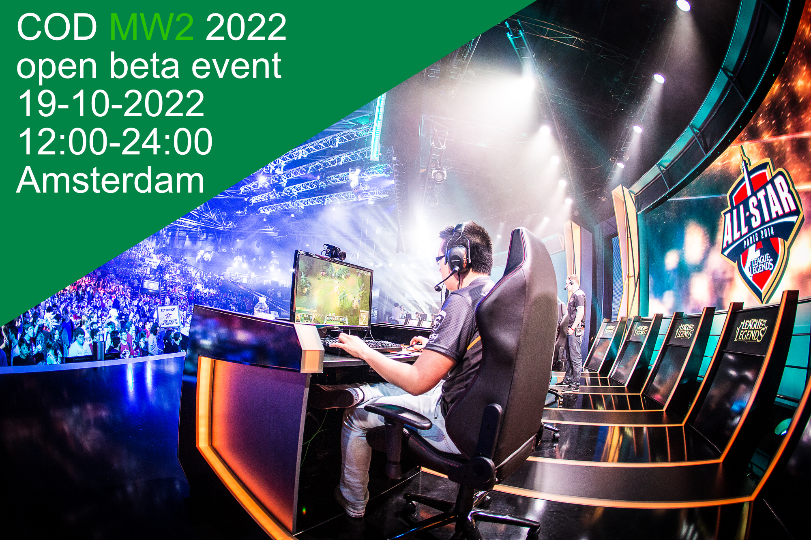

ㅤMountainbiken is een sport waarbij je over ruige terreinen fietst, meestal met een speciaal daarvoor ontworpen mountainbike. Het is zowel een competitieve als recreatieve sport. Lijkt dit je leuk meld je dan aan iedereen is welkom. Mountainbike wedstrijd 12 nov 14:00 15:00 in vaals
ㅤBij auto’s kan je aan veel dingen denken zoals: merk, werken aan auto’s of een carmeet Lijkt het je leuk om naar een carmeet te gaan om jouw auto te laten zien en een gezellige sfeer kom dan naar de carmeet iedereen is welkom. carmeet Sittard 23 okt 20:00 tot 24:00
ㅤeen festival kan een of meerdere dagen duren een festival kan verschillende thema's hebben en kan dus verschillende groepen aantrekken, meestal staan er verschillende activiteiten of optredens of de planning. Zin in een feestje? Koop dan een kaartje op onze website 110 voor dag ticket 330 plus camping plek voor een weekend ticket arctic monkeys, Martin garrix, foo fighters, Metallica, en nog veel meer in Kerkrade 21-23 juli 2023 vrijdag 21 juli gaan de deuren open om 9:00 uur
ㅤgamen doe je op een game console of op een computer, je hebt verschillende categorieën zoals: rpg, fps, action adventure, sandbox, racing en nog veel meer. Lijkt het je leuk op de nieuwste CoD als eerste te kunnen spelen kom dan naar het toernooi 10 euro per stuk er zijn maar 100 kaartjes voor de deelnemers dus wees snel.CoD mw2 2022 toernooi 19 okt 12:00 24:00 Amsterdam
ㅤSport is fysiek en het is goed voor je, je hebt verschillende soorten hulpmiddelen die je kan gebruiken, je kan het thuis doen of op een plek die ervoor is gemaakt denk bijvoorbeeld aan de basic fit. Wil je fit worden maar heb je geen motivatie om in je eentje naar de gym te gaan meld je dan aan voor de groep sessies.Groep sessies elke dag 19:00 tot 20:00
ㅤSkaten kan je doen in een skatepark of op de weg, er zijn verschillende vormen van skaten zoals: skeeleren, rolschaatsen je kan ook een skateboard gebruiken. Ben jij een echte skater meld je dan aan voor het skate toernooi en ontvang mooie prijzen Skate toernooi 24 okt 12:00 tot 14:30
ㅤKlimmen kun je binnen in een klimhal doen, maar ook buiten zijn er veel mogelijkheden. Zo heb je klimgebieden met rotsen van 20 meter hoog, maar ook Bigwalls van meer dan 1000 meter. Tijdens het klimmen word je gezekerd door een zekeraar die de touwen waarmee je klimt vasthoudt. Hou jij van boulderen of wil je kijken hoe ver je zou komen in een wedstrijd meld je dan aan voor onze Boulder wedstrijd toeschouwers en deelnemers kunnen gratis komen . Boulderwedstrijd 26 okt 12:00 17:00 voor de deelnemers en dan de finale om 20:00
ㅤbij ijshockey is het doel de puck in het net te krijgen ijshockey is de snelste teamsport ter wereld, op het ijs staan 5 spelers en 1 goalie bij ijshockey word er ongeveer elke 1.5 min gewisseld, ben jij geïnteresseerd kom dan naar de wedstrijd van Eaters tegen hijs hokij zitplaatsen zijn 12 euro per stuk staanplaatsen zijn 10 euro per stuk ijshockey wedstrijd in Geleen eaters tegen hijs hokij 30 okt 20:00 22:00